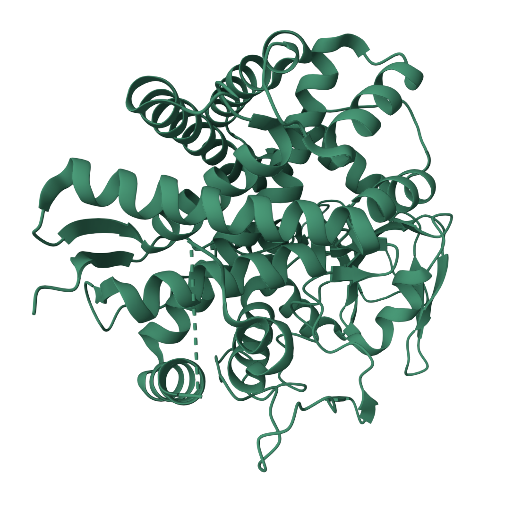

| GENE INFORMATION | ||
|---|---|---|
| Gene name | PTGIS |  |
| Description | Prostaglandin I2 synthase | |
| Gene type | Protein coding gene | |
| Chromosome | 20 | |
| Cytoband | q13.13 | |
| Chromosome location(bp) | 49503874 - 49568137 | |
| Ensembl | ENSG00000124212 | |
| UniProt | Q16647 | |
| PROTEIN FUNCTIONi |
|---|
| PTGIS is a key enzyme in eicosanoid metabolism that catalyzes the isomerization of PGH2 to prostacyclin (PGI2), a potent vasodilator and platelet aggregation inhibitor. Additionally, it exhibits dehydratase activity, particularly converting (15S)-hydroperoxyeicosatetraenoate (15(S)-HPETE) into corresponding hydroxyeicosatetraenoates (HETEs). This dual functionality positions PTGIS as a crucial regulator in vascular homeostasis and inflammatory responses. |
NOTE: Gene expression values are scaled by log2(TPM+0.001).